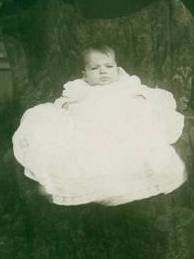
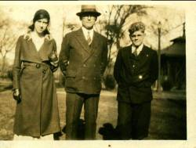

The Family Chronicle
No. 38 April 16, 2003
__________
Grace Elizabeth (Glendenning) Smith
(September 23, 1911 – August 9, 1991)
Grace was the oldest in the family and was born in Parksville, Tennessee. Dad and Mum had set up housekeeping there in February 1911 where Dad worked on Ocoee #1, the first of three dams build on the Ocoee River. Aunt Janet had journeyed to Parksville to be with Mum when Grace was born. Later Mum and Dad moved up the Ocoee River to Caney Creek where a second dam was built. (This project included the construction of a flume line to carry water for five miles over valleys and along
rocky ledges to a head pond with a drop of 250 feet to the turbines below. The flume line is designated as a national historic site.

Grace Glendenning in Parksville,
Tennessee at three months of age.
Dad bought the Jessie MacDonald property at Little Branch perhaps in time for Walter’s birth (Sept. 1913) and they move there during late 1913 or early 1914. In late 1916 they moved to Fairhaven, Connecticut where they lived at 3 Perkins Street. Grace would have attended school there. She attended the Armstrong School but I am not sure if it was in North Haven or Hampton, Virginia.
Later the family moved from Connecticut to Hampton, Virginia and Mussel Shoals, Alabama. Presumably Grace went to school in both places before returning to Little Branch in May 1919.
Grace likely attended the Little Branch to Grade 8 or 9. Later she attended Success Business College in Moncton, NB where she took a business program. While she made good marks, apparently she did not like the program. It was when returning from Business College with Grace that Dad upset the Model T at Gilbert’s Corner, near Shediac, and Grace broke her wrist. Even with a broken wrist, Grace went to a dance in the Little Branch School that night.
Like so many other Maritimers, Grace went to Boston to work, probably in 1930 and until she was married worked for various families, presumably, caring for children and doing housework. I believe that she also did cooking; I know that she was a good cook. I believe that she traveled to Boston the first time with Mrs. F. A. Fowlie and Ernest MacLean who were going to Lowell, Mass to visit relatives. We think that she stayed for a while with Dad’s cousin, Sam Knowles, when she first went to Boston. It is likely that her sister, Lillian, stayed there also. One old address we have is 1595 Beacon Street, Beverley, Mass. From time to time, Grace visited Uncle Jack Watling when he lived at Eastport, Maine near Portland.
Grace returned regularly to Little Branch for the summer coming sometimes by steamer from Boston to Saint John, NB. (I believe that the fare to Saint John was $10.00). In 1947, when I left home for Teachers’ College in Fredericton, I inherited Grace’s steamer trunk – and it carried my belongings on a number of later trips.

Undated photo of Grace with Uncle Jack
Watling and his adopted son, Ernest
As a young woman in Little Branch and later in Boston, Grace loved to square dance; perhaps that is where she met Roy Morrison Smith (1908-1985). Roy, I believe, preferred to round dance. Lillian said that the night she landed in Boston in 1933, she went to a dance with Grace. In 1936, Walter, Dad, Elinor and I drove to Boston to bring Grace home. She and Roy were married in St. Paul’s Presbyterian Church on August 26, 1936. They had two children, Barbara and Lawrence.
After marriage, Grace and Roy lived with Roy’s mother in Saugus, Mass, later moving to 23 Spring Street in Malden. One evening while standing on the sidewalk near her home in Malden talking to a neighbour, a man came along, knocked her off her feet and stole her purse. While in Saugus, Grace worked for Chisholm’s Motel on Route 1.
Grace, Roy and family were frequent visitors to Little Branch and even when they could not come, their children made the trip. My recollection is that Barbara and Lawrence spent 16 consecutive summers with their Grandmother at Little Branch. Often they came by train but also frequently traveled with expatriate New Brunswick folk who were visiting family in the Miramichi. I can remember being wakened in the middle of the night when Grace arrived home. She had brought some clothes for me and wanted to see them on me. The story is told that one summer when Grace was home and helping with the cooking and Ken was a toddler, Grace would jam Ken’s dress in the pantry door in order to keep him out of her way
In later years, Grace frequently landed home carrying shopping bags with fresh tomatoes from Roy’s garden, bagels for Jean MacKenzie and the usual things for family members.
Grace had extraordinary eyesight. While walking through a field she could reach down and pick a four leaf clover. One time she entered a contest, which required her to count the dots in a picture of a TV. She won, and then decided she should count the dots again in case she was asked the number at the presentation ceremony. I know that she also won other contests but cannot recall which ones. As a youngster, I can recall going with Grace and others to pick blueberries and raspberries and of walking through the fields. I am not sure if we were going somewhere or just for a walk.
Although she left New Brunswick as a young woman, she did not lose interest in family, friends or the community. She subscribed to the Chatham Gazette for many years and was well informed about activities among her extended family.
She was proud of her family, fiercely loyal, generous to a fault and she and Roy always welcomed and provided shelter for the many visiting family members. She was quick to arrange for visitors to see the Museum of Science, visit down town Boston, see the Saugus Iron works, etc.
During Christmas of 1957, before I was married, Carol and I came to Boston and stayed a few days with Grace and Roy. Gerald Taylor traveled to Boston with me and spent Christmas with Grace, Roy and family.
During her later years Grace had a form of multiple sclerosis and had difficulty walking. She then moved to Cliffside Nursing Home and Winthrop, Mass. She is buried in the Black River Cemetery.
The Chronicle is an occasional newsletter published by Don Glendenning It is intended to solicit and provide information about family tree matters. Comments, enquiries and information may be sent to 62 Queen Elizabeth Drive, Charlottetown, PEI, C1A 3A9. Tel: 902-892-5859 Email: dglende @attglobal.net. Feel free to make and pass along copies of this newsletter.